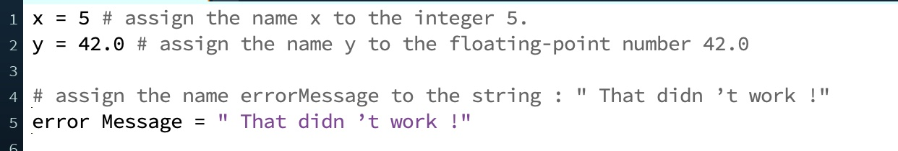
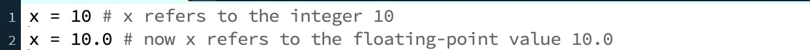

Variable assignment is the process of giving a valid name to a piece of data, and it is one of the most central tasks in a programming language. Python uses the equal sign (=) to assign a variable name to a value. Here are some examples of variable assignment:

One of the trickiest things for novices to understand concerning variable assignment is that it is not a symmetric operation. In mathematics, the statement 1 + 2 = 3 is a statement of fact. In that context, the = sign is saying, “the two things on either side of me are the same”. In Python (and most other programming languages), the = sign is not a statement of fact, but a command to create an association. Translated into English, the Python statement x = 5 means “assign the variable name x to the value 5”. Thus, from this point on, when you refer to the variable x you are in turn referring to the value 5 (but not the other way around!). The thing on the left of the = sign must be a variable name and the thing on the right of the = sign must be a value. As a result, not only are x = 5 and 5= x not the same statement, but 5 = x is not even a valid Python statement at all, because 5 is not a valid variable name.
The data or value to which a variable refers to always has a type, but you cannot tell from the data type from the variable name. You can even change the type that a variable refers to:

There are ways to determine the type of data that a variable refers to, but we’ll leave that for a later discussion. For now, just be aware that there is no way to guarantee that a variable always refers to data of a specific type. You can write a program so that a variable is always supposed to be of a certain type, but the type might change as a result of an error in your code.